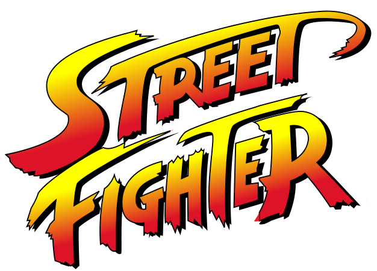

Conheça mais
Sobre o jogo
Street Fighter é uma franquia de jogos de luta com o seu primeiro jogo sendo lançado no ano de
1987 pela compania japonesa denominada como CAPCOM.
O seu sucesso não foi imediato, por conta de um máquina com botões duros, uma jogabilidade
travada e nada intuitva. No entanto, a empresa não desistiu e decidiu apostar em uma sequência
no ano de 1991, o famigerado Street Fighter II: The World Warrior havia chegado aos fliperamas
com uma jogabilidade, gráficos, trilha sonora e personagens extremamente marcantes.
O elenco era composto por 8 personagens jogáveis de diferentes países do mundo que se
confrontavam em um torneio mundial. Com esse sucesso, Street Fighter II tornou-se um marco na
história dos jogos de luta, popularizando o gênero mundialmente e consolidando a CAPCOM como uma
das principais referências da indústria. Seu legado permanece vivo até hoje, influenciando
diversas franquias e conquistando gerações de jogadores.


Ryu
Ryu é um mestre das artes marciais orgulhoso e distante cujo único objetivo na vida é percorrer o caminho de um guerreiro de verdade. Ele viaja pelo mundo com seu dougi branco, sua bandana vermelha e pés descalços em busca de novos adversários, novas técnicas de luta e novos conhecimentos para ajudá-lo a alcançar todo o seu potencial. Sua determinação em busca desse objetivo inspira muitos lutadores jovens. Por muitos anos, Ryu treinou junto de Ken, seu melhor amigo, sob a orientação de Gouken, mestre de Ansatsuken. O treinamento deles foi interrompido quando Gouken foi "assassinado" pelo próprio irmão, Akuma.


Golpes
Escolha o lutador acima e conheça mais sobre suas técnicas especiais
Minha relação com

A opção de seguir com um projeto individual de Street Fighter foi por uma série de razões pessoais já que desde pequeno eu jogava os jogos da franquia com os meus parentes, especialmente meu pai e tios. Eles também jogavam na infância e me ensinaram tudo o que sabiam para eu aprender. Com o passar do tempo, eu comecei a apreciar sua história e personagens, que apesar de não ter uma narrativa linear, contém o seu valor narrativo e grandes ensinamentos para a vida. Tanto é verdade que o meu personagem favorito é o Ryu onde eu destaco seu auto controle, equílibrio emocional, resiliência e disciplina como inspirações que eu me identifico e tento aplicar na minha rotina.